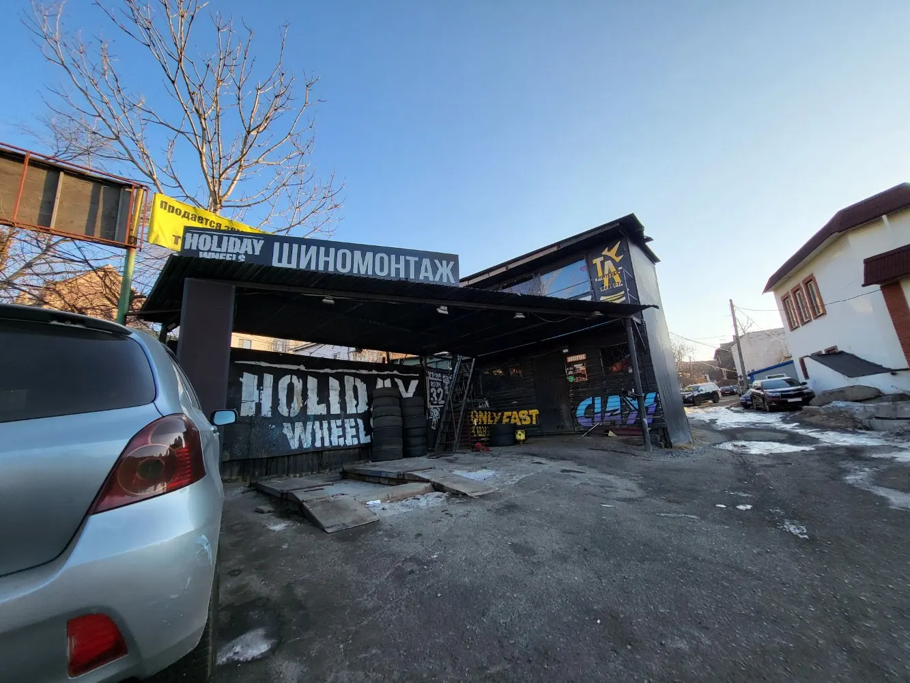
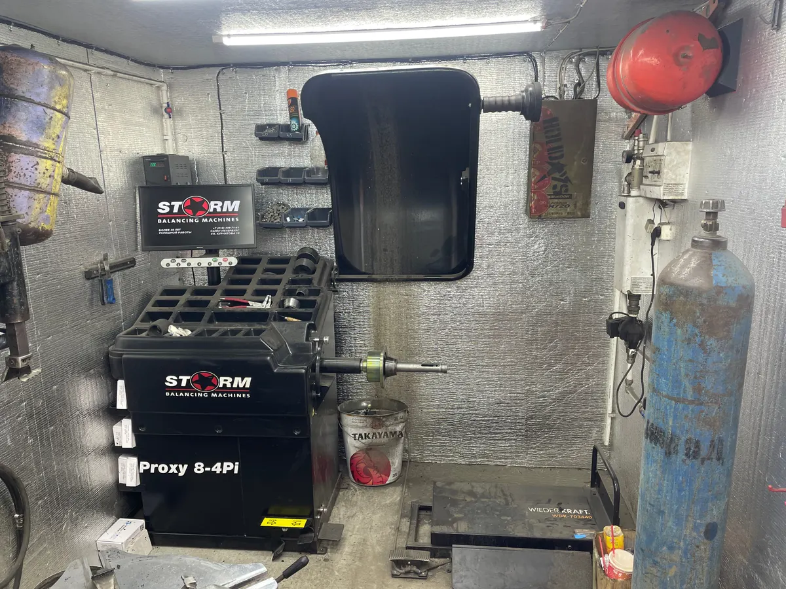
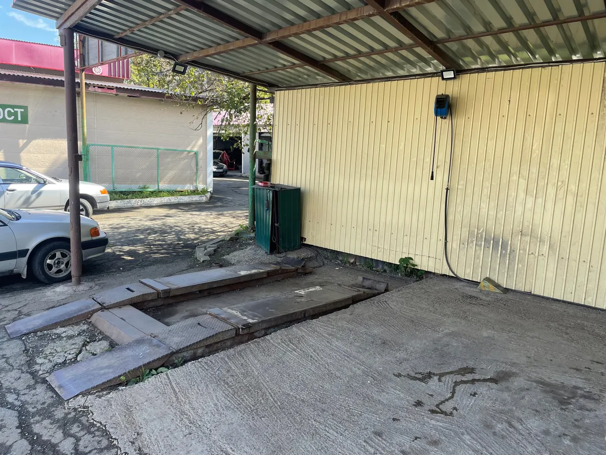
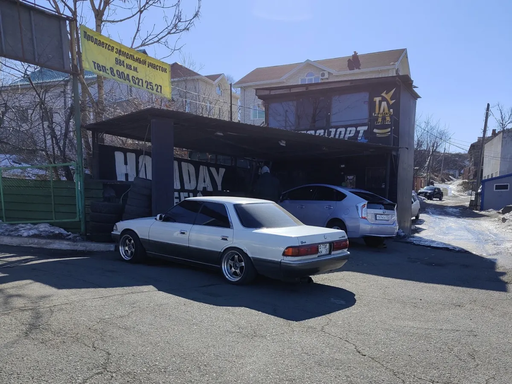

Шиномонтаж и ремонт дисков · Владивосток
Шиномонтаж во Владивостоке: переобувка и ремонт дисков
Выберите услугу, день и время - чат откроется с готовым текстом. Клиенты пишут, что прокол чинят за 5 минут.
- Ежедневно с 11:00 до 20:00
- Рейтинг 4,7, 52 оценки
- Балансировка, ремонт и прокатка дисков, оплата картой

Что ещё делают
Входит
- Балансировка колёс
- Сварочные работы по дискам
- Прокатка дисков
- Проточка тормозных дисков
Отдельно, если нужно
- Оплата: наличные и банковская карта
- Безналичный расчёт, по отзывам клиентов
- Принимают и срочные заявки, по отзывам клиентов
Цены по отзывам клиентов
Прайса на карточке на Яндекс.Картах нет. Здесь суммы, которые клиенты называют в отзывах, с датой отзыва. Точную цену называют после осмотра колёс.
Шиномонтаж
- Ремонт проколапо отзыву клиента, июль 2026: приехал с проколом, 5 минут500 ₽
- Переобуть 4 колеса R15по отзыву клиента, декабрь 2025: с лета на зиму1 700 ₽
- Снять, поставить и отбалансировать 4 колесапо отзыву клиента, апрель 20242 500 ₽
Диски
- Ремонт диска и замена покрышкипо отзыву клиента, март 2023: около 40 минут1 500 ₽
- Проточка тормозных дисковклиенты отмечают станок для проточкиуточнить
- Прокатка дисковуслуга указана на карточкеуточнить
Суммы взяты из отзывов клиентов Яндекс Карт, прайса на карточке нет. Актуальные цены уточняйте при записи.
Как записаться
- 01
Выберите услугу, день и время
В блоке записи вверху страницы.
- 02
Нажмите «Записаться»
Откроется чат с готовым сообщением - останется его отправить.
- 03
Дождитесь подтверждения
Мастер уточнит размер колёс и время.



Что говорят клиенты
Быстро
Клиент пишет: заехал с проколом, через 5 минут поехал дальше.
Адекватные цены
Клиенты называют цены адекватными и приемлемыми.
Профессионально и вежливо
Клиенты отмечают вежливых ребят, которые знают своё дело.
Редкий станок
Клиент пишет про станок для проточки тормозных дисков.
Отзывы с Яндекс.Карт
«Отличная шинка, ребята профи, вежливые, знают своë дело. И классный станок у них есть для проточки тормозных дисков, ранее такого не видел в своëм городе.»
Игорь Романов · 12 сентября 2025
«Заехал с проколом - 5 минут 500 рублей - счастливый поехал дальше»
Tattoonkhamun · 11 июля 2026
«Влетел в глубокую яму, появилась грыжа на покрышке, и погнул диск. За 40 минут и полторы тысячи рублей отремонтировали диск и поменяли покрышку. Всё отлично!»
Михаил Х. · 22 марта 2023
Отзывы с карточки на Яндекс.Картах, без правок.
Частые вопросы
Где находится шиномонтаж?
Владивосток, Некрасовская улица, 38Б, строение 3.
Как записаться?
Выберите услугу, день и время в блоке записи вверху страницы - откроется чат с готовым сообщением. Можно позвонить: +7 (964) 439-98-85.
Сколько стоит переобуть колёса?
Клиент в декабре 2025 писал про 1700 ₽ за 4 колеса R15, в апреле 2024 - 2500 ₽ за комплект с балансировкой. Актуальную цену уточняйте при записи.
Можно ли заехать с проколом?
Клиент в июле 2026 пишет, что прокол починили за 5 минут за 500 ₽. Перед приездом лучше написать или позвонить.
Ремонтируете ли вы диски?
Да, на карточке отмечены сварочные работы и прокатка дисков. Клиент также писал про ремонт диска за 40 минут.
Есть ли проточка тормозных дисков?
Клиент в отзыве хвалит станок для проточки тормозных дисков. Условия уточняйте у мастера.
Можно ли оплатить картой?
Да, наличными и банковской картой.
В какие часы вы работаете?
Ежедневно с 11:00 до 20:00.
Записаться в Holiday wheels
- Адрес
- Некрасовская улица, 38Б, стр. 3, Владивосток
- Часы
- Ежедневно 11:00-20:00
- Телефон
- +7 (964) 439-98-85